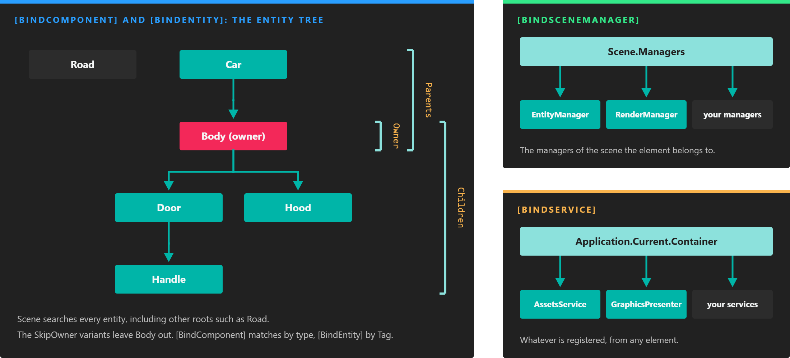

Bindings

Each attribute searches a different place. The two entity attributes walk the entity tree from the owner of the component; the other two ask the scene or the application.
Bindings connect an element to the things it depends on without any lookup code. You mark a field or property with an attribute such as [BindComponent], and Evergine finds the dependency and assigns it when the element is attached. A component can require the Transform3D of its entity, the RenderManager of its scene or a service of the application, and simply use it.
Bindings are resolved during the attach step of the lifecycle, right before OnAttached() runs. If a required dependency cannot be found, the element is not attached at all, which is far easier to diagnose than a NullReferenceException later on.
Note
Bound members are still null in the constructor and in OnLoaded(). Use them from OnAttached() onwards.
The Four Binding Attributes
| Attribute | Finds | Where it searches | Usable in |
|---|---|---|---|
[BindComponent] |
Components | The owner entity by default; also its children, its parents or the whole scene. | Components |
[BindEntity] |
Entities, by tag | The whole scene by default; also the owner, its children or its parents. | Components |
[BindSceneManager] |
Scene managers | The scene managers of the current scene. | Components, scene managers |
[BindService] |
Services | The Application Container. | Components, scene managers, services |
Every attribute has an isRequired parameter, true by default. The pages of each attribute list the rest of their parameters.
Example
This component binds a service, a scene manager and a component, and uses all three in Start():
using Evergine.Framework;
using Evergine.Framework.Graphics;
using Evergine.Framework.Managers;
using Evergine.Framework.Services;
using Evergine.Mathematics;
namespace MyProject
{
public class DebugSetup : Component
{
[BindService]
private AssetsService assetsService;
[BindSceneManager]
private RenderManager renderManager;
[BindComponent]
private Transform3D transform;
private Material defaultMaterial;
protected override void Start()
{
base.Start();
// All three members were assigned before OnAttached() ran.
this.defaultMaterial = this.assetsService.Load<Material>(DefaultResourcesIDs.DefaultMaterialID);
this.renderManager.DebugLines = true;
this.transform.Position = Vector3.Zero;
}
}
}
If the entity had no Transform3D, DebugSetup would not attach and Start() would never run.
Binding Errors
How a failed required binding is reported depends on the ErrorHandler service:
ErrorHandler.ThrowBindingExceptions |
What happens |
|---|---|
true (the default) |
A BindingException is thrown that names the type and the member that could not be resolved. |
false |
An error with the same information is written to the trace output, and the element stays detached. |
Evergine Studio sets it to false, so a component with a missing dependency does not stop you from editing the scene; look for the error in the Output panel.
Bind Collections
When the bound member is a List<T>, the binding collects every match instead of the first one:
// The Transform3D of the owner entity.
[BindComponent]
private Transform3D transform;
// Every Camera3D in the scene.
[BindComponent(source: BindComponentSource.Scene)]
private List<Camera3D> sceneCameras;
A list binding is always satisfied, even when the list is empty. It is filled once, when the element is attached: elements that appear later are not added to it, while bound elements that are removed are taken out of it. For a set of entities that changes over time, use an entity tag collection.
Note
Only List<T> is recognized as a collection. Arrays and other collection types are treated as a single value.
When a Dependency Goes Away
Bindings keep track of what they found. If a required dependency is detached or destroyed, for example because its component is removed, the element that depends on it is detached too, since its binding no longer holds. An optional dependency is set back to null instead, so check it before using it.